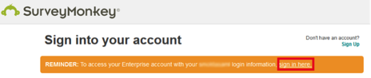

Email the SurveyMonkey Support team and request that they enable SAML 2.0 for your account.
Attach the following IDP Metadata:
SurveyMonkey will process your request. After receiving a confirmation email, you can start assigning people to the application.
Done!
Notes:
IdP-initiated flows and SP-initiated flows are supported.
Just In Time (JIT) provisioning is not supported.
For SP-initiated Flows:
Click Sign in here.
